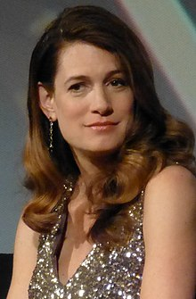

Portrait
Gillian Flynn is an American author and screenwriter.
She has written 3 full-length thriller novels: Gone Girl, Sharp Objects, and Dark Places.
All 3 novels have screen adaptations, and she penned the screenplays for the movie adaptation of Gone Girl and the TV adaptation of Sharp Objects, receiving critical acclaim.
(The only one that didn't get critical acclaim was the 2015 movie adaptation of Dark Places, which she didn't write. But HBO ordered a limited series adaptation, which she will write--and will most definitely be critically acclaimed for!)
She's my "hero" because she's a great author, and even if I don't write thriller books, it's pretty awesome that she got to/is going to adapt all her works herself, rather than letting some man do it, which is probably why Dark Places (2015) flopped...